Mouvement
Élémets de compétence ciblés
00SW - 3 : Générer des représentations de mondes réels ou imaginaires 00SW - 4 : Programmer la logique du jeu ou de la simulation
Habiletés
- Choisir et utiliser les éléments graphiques pour l'affichage et la saisie
- Intégrer les images
- Utiliser les moteurs de jeu ou de simulation
- Programmer les comportements des éléments graphiques et des périphériques
Créer un nouveau projet de développement
- Démarrer Unity Hub.
- Dans la section Projects, choisir New Project.
- Choisir Universal 2D.
- Nommer le projet et choisir l'emplacement où le projet sera enregistré
- Décocher Connect to Unity Cloud
- Choisir Create Project
Importer des ressources
Le magasin en ligne de Unity (Asset Store) possède une game étendue de ressources pour les cérateurs. Dans le cadre du cours ce magasin sera utilisé pour se procurer les images et sons pour les projets. Il est bien sûr possible d'utiliser plusieurs autres sources gratuites disponibles en ligne.
Lors de l'importation de ressources du Asset Store, Unity fait usage du Package Manager. C'est un outil utilisé très fréquement pour étendre les fonctionnalités de Unity selon nos besoin ou, bien sûr, importer des ressources pour nos projets.
Le package manager se retrouve dans le menu Window > Package Manager
En pratique
- Ouvrir le magasin en ligne à partir d'un navigateur Unity Asset Store.
- Prendre un moment pour explorer les ressources disponibles, notamment les ressources 2D.
- Trouver la ressource : 2D Space Kit.
- Cliquer Add to My Assets.
- Accepter les termes d'utilisation (après les avoir lu... non).
- En haut de la page, choisir Open in Unity, il faut que votre projet soit déjà ouvert.
- Unity ouvre le Package Manager avec vos ressrouces déjà sélectionnées.
- Cliquer sur Download et une fois le téléchargement fini sur Import (L'importation est nécessaire).
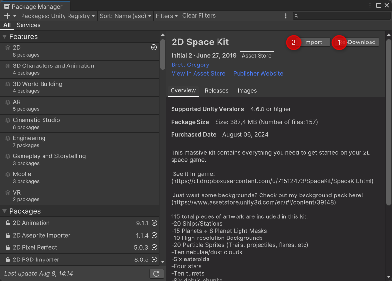
- Une nouvelle fenêtre permet de sélectionner seulement quelques éléments. Choisir Import.
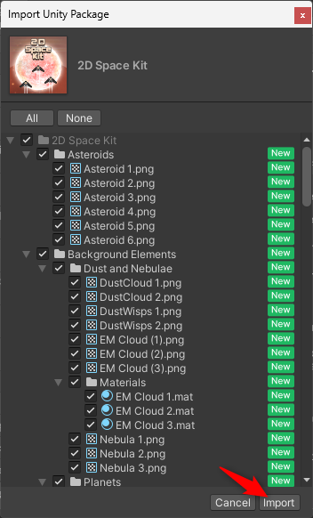
- Il se peut que Unity demande la mise à jour de certains éléments. Accepter la mise à jour pour tous les fichiers et les prochains.
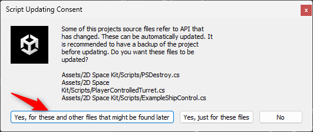
- Explorer les ressources téléchargées.
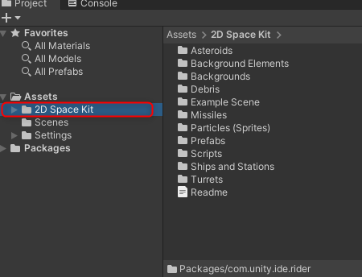
Travailler avec des images
Les images (.jpg, .png, etc...) qui sont utilisées en jeux vidéo sont appelées sprites. Lorsqu'un GameObject est crée en le glissant dans la scène ou manuellement un composant SpriteRenderer est automatiquement ajouté. Les sprites sont la ressource visuelle principale des jeux en 2 dimensions.
En pratique
- Parmi les ressources acquises, choisir un vaisseau pour représenter le joueur.
- Glisser l'image directement dans la fenêtre Hierarchy.
- Le vaisseau apparaît directement au centre de la fenêtre de scène et le GameObject est dans la hiérarchie.
- Sélectionner le nouveau GameObject et le renommer Joueur dans l'inspecteur.
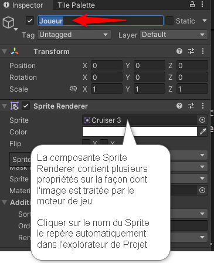
- Répéter le processus pour l'image de fond en sélectionnant parmi les images du dossier : 2D SpaceKit > Backgrounds
- Renommer le GameObject : Fond
Ordre de rendu
Avec l'ajout d'un fond, le joueur n'est plus visible dans la scène. En mode 2D tout les éléments sont dessinés à la même hauteur par défaut.
En déterminant la hauteur des sprites il est possible de créer plusieurs illusions de profondeurs.
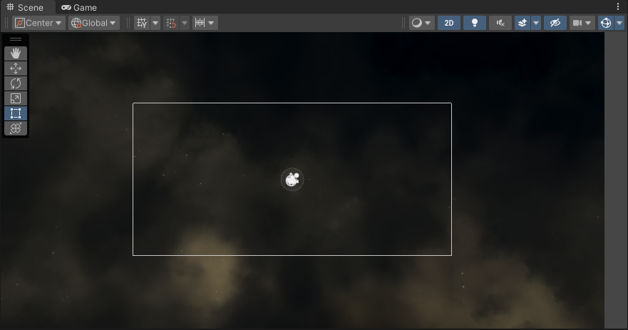
En pratique
- Repérer la propriété Order In Layer du GameObject Fond au moyen de l'inspecteur. C'est une propriété de la composante Sprite Renderer.
- Plus la valeur est haute plus un sprite est affiché au-dessus des autres et vice-versa.
- Modifier le propriété Order In Layer du fond pour -10.
- Remarquer que le joueur est maintenant affiché au-dessus de l'image de fond.
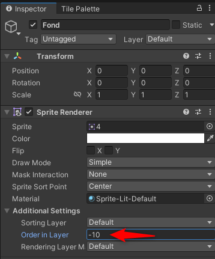
Saisie des interactions
En découvrant l'environement de travail, le script présenté permet de déplacer le joueur. Cependant, s'il faut programmer les déplacement pour le clavier ET une manette, le code devient rapidement lourd car il faut détailler les effet pour chaque intéraction. De plus, une manette peut aller vers la droite complètement ou en partie. Dans plusieurs jeux de console le personnage se déplace plus ou moins vite selon la position du manche.
Pour rendre le code plus efficace et tenir compte des différentes méthodes d'interaction (flexible), Unity a développer l'extension Input System. Cette extension permet de définir des Input Action.
Une Input Action est quelque chose que le joueur peut faire dans le jeu : se déplacer, tirer, intéragir avec un personnage, etc...
L'Input Action est utilisée dans le code pour séparer la logique du type de matériel utilisé. Par exmple, Lorsqu'il faut configurer une nouvelle façon de déplacer le joueur, il n'y a qu'à lier la Input Action désirée au nouveau contrôleur
Il faut télécharger et activer cette extension pour l'utiliser.
En pratique
Installer l'extension Input System
- Ouvrir le gestionnaire d'extensions avec le menu Windows > Package Manager
- S'assurer que le filtre est à : Unity Registry
- Repérer et installer l'extension Input System
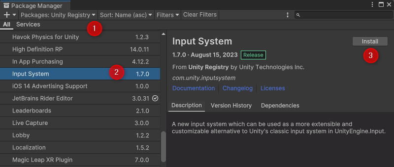
- Pour utiliser l'extension Unity doit activer d'autres éléments, heureusement il offre de les faire des l'installation. Accepter les modifications et laisser l'éditeur se recharger.
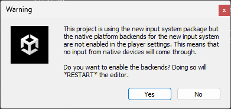
Définir une Input Action directement
- Créer le dossier Scripts dans le dossier Assets.
- Utiliser le menu contextuel (clique droit) pour créer un nouveau script Create > C# Script.
- Renommer le script JoueurCtrl et l'ajouter aux composantes du GameObject Joueur.
- Ouvrir le script et ajouter l'attribut
public InputAction GaucheAction;à la classe et sauvegarder le script. - Remarquer le changement dans l'inspecteur pour le Joueur. On y retrouve l'action définie dans le script.
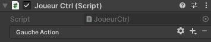
- Sélectionner les propriétés de l'action (l'engrenage à droite du nom).
- Configurer Action Type pour que ce soit un Button.
Lier l'action Gauche à un bouton
- Ajouter un lien Add Binding avec le bouton + de GaucheAction.
- Double cliquer le Binding vide pour GaucheAction
- Développer le menu déroulant de la propriété Path et sélectionner Keyboard.
- Enfoncer la touche A et sélectionner A [Keyboard] pour la définition de l'interaction.
Scripter le comportement
- Il faut avant tout activer l'action au niveau du script.
- Ajouter
GaucheAction.Enable()à la méthode Start(). - Modifier la méthode update pour que le code soit:
Vector2 position = transform.position;
float horizontal = 0.0f;
if (GaucheAction.IsPressed())
{
horizontal = -1.0f;
}
position.x = position.x + 0.1f * horizontal;
transform.position = position;
- Tester le jeu et confirmer que le joueur se déplace vers la gauche and utilisant la touche A
Définir une Input Action par Valeur
L'action définie précédement est polyvalente pour l'intéraction (clavier, souris, manette ou autre) mais lorsqu'il s'agit de mouvement le code reste charger car il faut définir chaque direction.
Unity fournit une méthode pour simplifier encore plus le traitement du déplacement. L'Input Action par valeur. Au lieu de retourner 0 ou 1 si une touche est enfoncée ou non, elle retourne une valeur de 0 à 1 ou même un vecteur (Vector2 dans notre cas) représentant la direction et l'amplitude du déplacement.
- Ouvrir le script JoueurCtrl.
- Remplacer l'attribut publique GaucheAction par
public InputAction MvmtAction;. - Activer l'action dans la méthode
Start()de la même façon que pour l'Input Action précédente. - Modifier la méthode update pour que le code devienne:
// ReadValue récupère la valeur de l'action plutôt qu'un résultat binaire (enfoncé ou non)
Vector2 mouvement = MvmtAction.ReadValue<Vector2>();
Vector2 position = (Vector2)transform.position + mouvement * 0.1f;
transform.position = position;
- Dans l'inspecteur du GameObject Joueur, ajouter une liaison de type composite Add Up/Down/Left/Right Composite.
- Cette liaison comporte 4 enfants, configurer chaque enfant pour les touches W:haut, A:gauche, S:bas, D:droite, en utilisant la même méthode que celle de la liaison par Button.
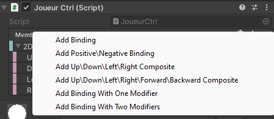 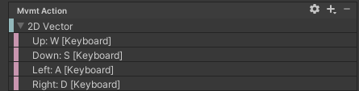
- Passer en mode jeu et tester le résultat. Le joueur devrait pouvoir se déplacer dans toutes les directions.
Rendre le mouvement indépendant de la vitesse d'affichage (framerate)
La boucle de jeu met à jour les informations puis affiche l'état du jeu. Donc, à chaque affichage, la méthode Update() du script de mouvement est exécuté.
void Update()
{
Vector2 mouvement = MvmtAction.ReadValue<Vector2>();
Vector2 position = (Vector2)transform.position + mouvement * 0.1f;
transform.position = position;
}
En analysant le code, le déplacement est de 1/10 d'unité par exécution: - Si un ordinateur puissant exécute le jeu et affiche à un rythme de 120fps (frame per second), le joueur se déplace de 12 unités par seconde. - Un autre ordinateur moins performant affiche à un rythme de 60fps, le joueur aura une vitesse de 6 unités par seconde.
Pour avoir un mouvement cohérent, quelle que soit la machine qui exécute le code, il faut tenir compte du temps écoulé entre chaque exécution. La librairie C# de Unity fournit la classe statique Time qui possède justement l'attribut deltaTime, le temps écoulé depuis la dernière exécution de la boucle de jeu.
Il ne reste qu'à multiplier le mouvement par deltaTime pour normaliser les déplacement à 0.1 unité par seconde.
void Update()
{
Vector2 mouvement = MvmtAction.ReadValue<Vector2>();
Vector2 position = (Vector2)transform.position + mouvement * Time.deltaTime * 0.1f;
transform.position = position;
}
En testant le jeu, il devient évident que la normalisation du mouvement l'a rendu très lent! La valeur magique de 0.1f peut être modifiée pour obtenir une vitesse adéquate.
Donner accès aux variables du script dans l'interface Unity
Ajuster le mouvement après normalisation devient rapidement désagréable. Il faut ouvrir le script, modifier la variable, sauvegarder, attendre que Unity recompile, etc... Et il n'est question que de la vitesse de déplacement du joueur!
Pour optimiser le travail de conception, rendre disponible des variable comme la vitesse directement dans l'interface de Unity. Ce procédé a déjà été utilisé lors de la configuration des interactions.
En pratique
- Ouvrir le script de mouvement du joueur.
- Ajouter l'attribut
public float vitesse. - Modifier le calcul de la position pour utiliser la variable vitesse au lieu de 0.1f.
- Repérer la nouvelle variable de script dans l'inspecteur du GameObject Joueur.
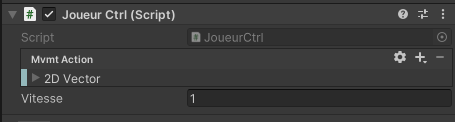
- Tester le jeu avec différentes valeurs.
Références et approfondissement
Aller plus loin
Implémentez un suivi de caméra pour suivre le joueur (le vaisseau).